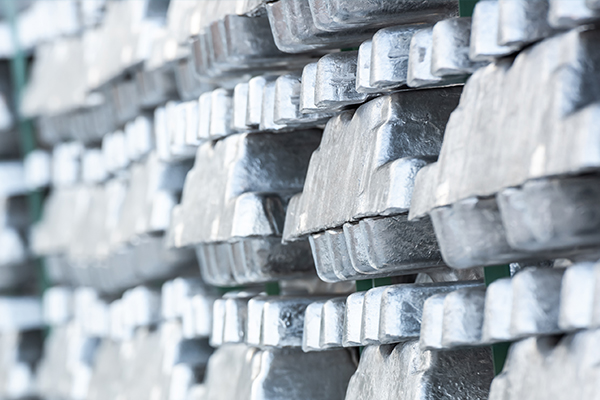
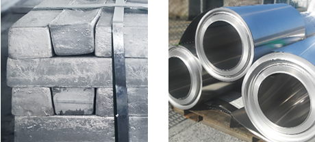
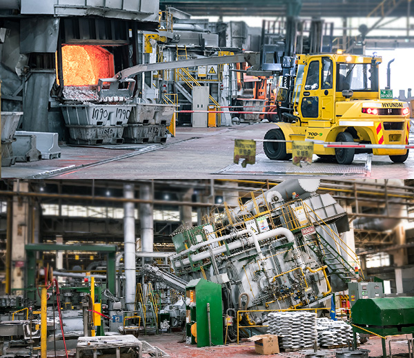
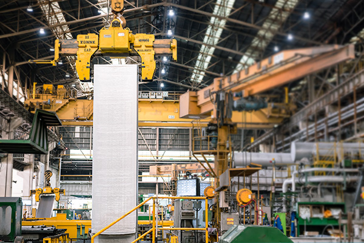
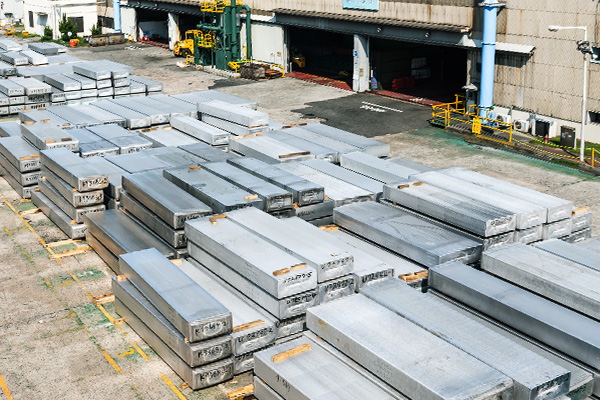

@@include('./include/header.html')
생산공정
MANUFACTURING PROCESS
주조 REMELT
- 원재료Raw material
- 용해Melting
- 유지Holding
- 주조Casting
- 슬라브Slab


- 원재료 Raw material
- 주조공정에 사용되는 원재료에는 알루미늄 지금, 하드너, 스크랩
등이 있다.

- 용해로 Melting F’ce 및 유지로 Holding F’ce
- 용해로에서 용해된 용탕은 유지로에서 탈가스 및 성분보정을 거쳐
주조기로 이동된다.
- 용해로에서 주요 합금 성분 투입한다.
- 용해된 스크랩의 성분을 원하는 합금 성분으로 조정한다.
- 필요 시 유지로에서 최종 합금 성분이 조정한다.
- 유지로에서 모든 정제 작업(fluxing)이 이루어진다.

- 주조기 Casting
- 탈가스와 여과공정을 거친 용탕은 직접냉각 주조공정을 거쳐
슬라브로 제조된다.

- 슬라브 Slab, Sheet Ingot
- 용해 및 주조 공정을 거쳐 주조기에서 직육면체 형태로 제작된 괴
(Sheet Ingot)를 슬라브(Slab)라 하며, 최종제품의 치수와 중량에
따라서 그 크기가 결정된다.
@@include('./include/footer.html')